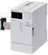
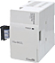

Network/Communication module CC-Link

CC-Link
| Model | Master station function | Remote, slave function |
Distance | Compatible CPU module | ||||
|---|---|---|---|---|---|---|---|---|
| FX5U | FX5UC | FX5UJ | FX5S | |||||
|  | FX5-CCL-MS CC-Link system master/intelligent device module |
○ | ○ | 1200 m | ○ | *1 ○ |
○ | × |
 |
FX3U-16CCL-M *2 CC-Link (Master station) |
○ | × | 1200 m | *3 ○ Up to 1 module |
*3 ○ Up to 1 module |
× | × |
|  | FX3U-64CCL CC-Link (Intelligent device station) |
× | ○ | |||||
- *1FX5-CNV-IFC or FX5-C1PS-5V is necessary to connect to the FX5UC CPU module.
- *2When CC-Link master and AnyWire Bitty master or AnyWireASLINK master are used together, connect to the front stage (left side) of AnyWire Bitty master and AnyWireASLINK master. When used together, please refer to the FX3U-128ASL-M, FX3U-128BTY-M, and FX3U-16CCL-M user's manuals.
- *3When connecting to FX5U or FX5UC, FX5-CNV-BUS or FX5-CNV-BUSC is required. Select one according to the system configuration.